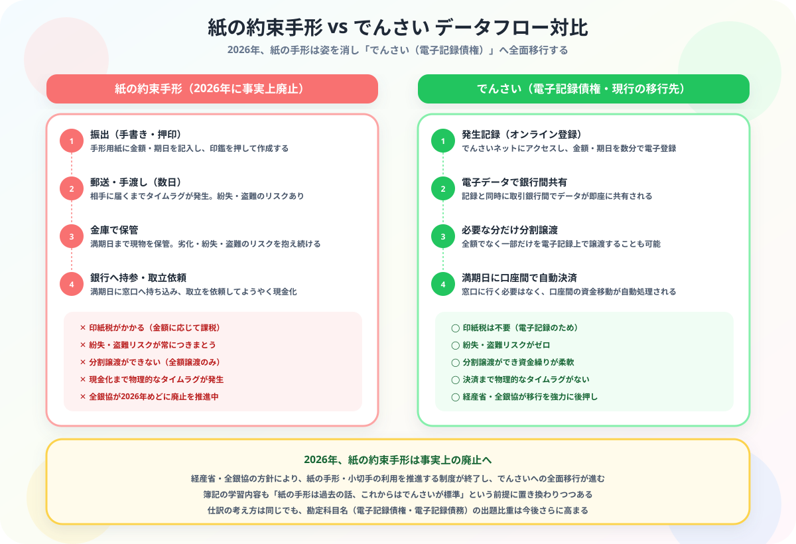

日商簿記3級 | 公開：2026年5月7日
受取手形・支払手形の仕訳
電子記録債権まで図解で完全解説
著者：大谷 一輝（大阪経済大学3回生・日商簿記1級勉強中）
この記事でわかること（5秒まとめ）
- 受取手形は資産・支払手形は負債——受け取った側が権利、振り出した側が義務
- 満期日に決済→受取手形/支払手形を消去して当座預金と交換する
- 電子記録債権・電子記録債務は手形の電子版——勘定科目が変わるだけで考え方は同じ
- 貸付金・借入金は「商品代金ではなくお金の貸し借り」——手形との違いを混同しないことが合否の分かれ目
手形とは「一定の期日に一定の金額を支払う」という証書です。掛取引と似ていますが、支払期日が明確に定められている点が違います。受取手形は「後でもらえる権利」（資産）、支払手形は「後で払う義務」（負債）です。
受
手形って受取手形・支払手形・電子記録債権……勘定科目が多すぎてどれをいつ使えばいいのか混乱します。
大丈夫、整理するポイントは2つだけです。まず「自分が受け取った手形か、振り出した手形か」で資産か負債かが決まります。次に「紙の手形か電子かで勘定科目名が変わる」だけで、仕訳の考え方は全く同じです。
師
そこは混同しやすいですが、手形は「商品売買の後払い」、貸付金は「お金そのものを貸した」という違いです。問題文に「資金を貸した」と書いてあれば貸付金、「商品の代金として手形を受け取った」なら受取手形です。焦らず問題文を読めば必ず判断できますよ！
師
❓ 振出人と名宛人の違い——「振り出す側」と「受け取る側」どちらが負債になるか

図：名宛人（売った側）＝受取手形（資産）、振出人（買った側）＝支払手形（負債）と電子版の対比
手形は振り出す側が「支払手形（負債）」、受け取る側が「受取手形（資産）」になります。満期日に双方の手形勘定を消去します。
商品を売った側
名宛人（なあてにん）
→ 受取手形（資産）
手形を受け取った側。満期日に銀行を通じてお金を受け取れる。
商品を買った側
振出人（ふりだしにん）
→ 支払手形（負債）
手形を発行した側。満期日に銀行口座から引き落とされる。
📄 ① 手形を受け取ったとき（名宛人）——受取手形（資産）が発生する仕訳
例題
A社に商品 ¥100,000 を売り上げ、代金として約束手形を受け取った。
A社（名宛人）の仕訳
受取手形100,000／売上100,000
📝 ② 手形を振り出したとき（振出人）——支払手形（負債）が発生する仕訳
例題
B社から商品 ¥100,000 を仕入れ、代金として約束手形を振り出した。
B社（振出人）の仕訳
仕入100,000／支払手形100,000
💰 ③ 満期日に決済されたとき——受取手形・支払手形を消去して当座預金と交換する
名宛人（受け取る側）
当座預金100,000／受取手形100,000
振出人（支払う側）
支払手形100,000／当座預金100,000
満期日の仕訳は「発生の逆」をやるだけ！
受取手形を受け取ったときの逆＝当座預金に入金して受取手形を消す。支払手形を振り出したときの逆＝当座預金から引かれて支払手形を消す。
💻 ④ 電子記録債権・電子記録債務——手形の電子版、勘定科目名だけが違う
紙の約束手形に代わる電子的な仕組みで、2016年以降の簿記3級の試験範囲です。
でんさいの本質：「振り替え」であって新たな売上・仕入ではない
電子記録債権・債務は、すでに計上済みの売掛金・買掛金を電子記録に切り替えるものです。金額はそのまま、勘定科目だけ変わります。売上や仕入は発生しません。
電子記録債権
売掛金から振り替え（資産）
売掛金 → 電子記録債権
電子記録債務
買掛金から振り替え（負債）
買掛金 → 電子記録債務
振り替え時の仕訳——売掛金・買掛金から電子記録債権・債務へ
例題
A社への売掛金 ¥3,000 について、電子記録債権への振り替えを行った。またA社は買掛金 ¥3,000 を電子記録債務に振り替えた。
債権者側（売掛金がある側）の仕訳
電子記録債権3,000／売掛金3,000
債務者側（買掛金がある側）の仕訳
買掛金3,000／電子記録債務3,000
電子記録債権の回収（満期決済）
当座預金3,000／電子記録債権3,000
「振り替え」なので売上・仕入は発生しない！
電子記録への移行は、既存の債権・債務の形を変えるだけです。売上や仕入はすでに掛取引の時点で計上済み。ここで再度計上するのは誤りです。
💴 ⑤ 貸付金・借入金と利息の仕訳——「お金の貸し借り」は手形とは別の勘定科目
お金を貸し借りするときの勘定科目と、利息（レンタル料）の処理を確認しましょう。
貸付時（現金100,000円をA社に貸した）
貸付金100,000／現金100,000
利息受取時（受取利息は収益）
現金1,500／受取利息1,500
借入時（現金100,000円を銀行から借りた）
現金100,000／借入金100,000
利息支払時（支払利息は費用）
支払利息1,500／現金1,500
利息の計算式：元金 × 年利率 × 月数÷12
例）元金100,000円・年利3%・6ヶ月 → 100,000 × 3% × 6/12 ＝ 1,500円
年利率をそのまま掛けず「×月数/12」を忘れずに！
📌 ⑥ 利息天引き借入——借入時に利息を差し引かれるパターンの仕訳
銀行が借入時に利息を差し引いて入金する「天引き」パターンは要注意です。
例題
元金500円・利息20円を天引きして480円が入金された。
借入時（天引きパターン）
普通預金480／借入金500
支払利息20
❌ NG：入金額480円を借入金にしてはいけない！
（借）現金480 ／（貸）借入金480 → 返済時に500円払うのに帳簿と20円の差が出てしまう。
✅ 借入金は「返済義務の金額（元金）」で計上する。利息は支払利息（費用）で別計上。
👥 ⑦ 役員・従業員への貸付金・借入金——相手が社内の人でも勘定科目は変わる？
相手が自社の役員や従業員の場合は、専用の勘定科目を使います。
役員に現金100円を貸した
役員貸付金100／現金100
従業員に現金500円を貸した
従業員貸付金500／現金500
役員から現金600円を借り入れた
現金600／役員借入金600
なぜ専用勘定を使うのか？
役員との金銭取引は財務諸表で開示が必要なため、通常の「貸付金」と区別します。「誰に対する貸付・借入か」を科目名で明示するルールです。
🔍 ⑧ 商品売買の手形 vs 資金貸借の手形——どちらか迷ったら問題文のこの言葉を探す
約束手形が登場する場面は2種類あります。使う勘定科目が異なるため注意が必要です。
| 場面 |
受け取る側 |
振り出す側 |
| 商品売買（代金の決済） |
受取手形（資産） |
支払手形（負債） |
| 資金の貸し借り（第7章） |
手形貸付金（資産） |
手形借入金（負債） |
見分け方：何のための手形か？
商品を売買した代金の決済 → 受取手形・支払手形
お金を貸し借りするときに担保として振り出す → 手形貸付金・手形借入金
「商品が動いたかどうか」で判断しましょう。
⚔ Study Quest で学習を記録しよう
簿記3級の学習時間をRPG感覚で記録。試験日までの学習ペースをリアルタイムで確認できます。
無料で始める →
📋 まとめ：手形 早見表
手形を受け取った（売り側）受取手形（資産↑）／ 売上
手形を振り出した（買い側）仕入 ／ 支払手形（負債↑）
満期日・受取側当座預金 ／ 受取手形（資産↓）
満期日・支払側支払手形（負債↓）／ 当座預金
電子記録債権（振り替え）電子記録債権 ／ 売掛金（売上・仕入は不発生）
電子記録債務（振り替え）買掛金 ／ 電子記録債務（売上・仕入は不発生）
資金貸借の手形（貸す側）手形貸付金 ／ 現金（受取手形ではない）
資金貸借の手形（借りる側）現金 ／ 手形借入金（支払手形ではない）